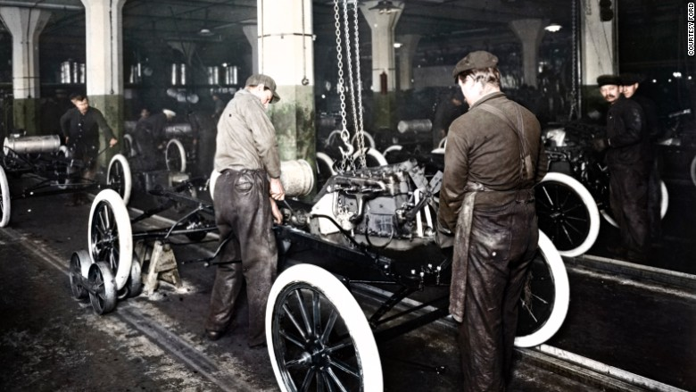
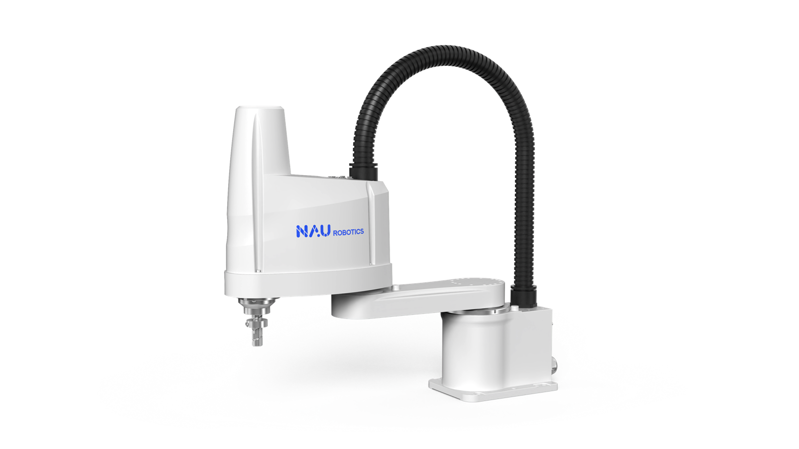
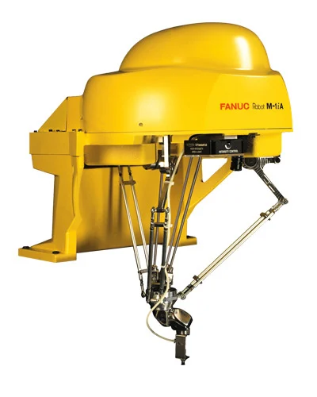
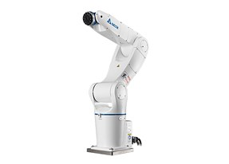

History


UNIMATE 001
Unimate는 무거운 물질을 다루고 반복적인 작업을 수행하도록 설계되었고, 그것은 빠르게 다양한 산업에서 조립 라인에 집을 마련했습니다.
조립 라인에서 로봇의 사용은 널리 퍼졌습니다. 1980년대 이후 인간 노동자들과 함께 일할 수 있도록 설계된 최초의 협동 로봇, 즉 "코봇"의 개발이 있었습니다
다축로봇의 등장

SCARA ROBOTS
XY축 이동시 유리한 산업용 로봇으로, 주로 작은부품을 옮길때
유리하여 전자기기와 같은 소형제품을 만드는 곳에서도 사용합니다.

DELTA ROBOTS
고정된 플랫폼에 연결된 복수의 팔을 가지고 있으며, 연결된 지점에서
병렬로 움직임 으로서 빠르고 정밀한 움직임이 가능합니다.

ARTICULATED ROBOTS
다중 관절 조인트로 구성되어 인간의 팔과 가장 유사한 구조로
다양한 용도로 사용 가능하여 자동차 공정에서 많이 사용되고 있습니다.
The Future of Car Manufacturing
Robot arm과 같은 다축 로봇을 기반으로 인공지능,
센서, 머신러닝등의 기술융합을 통한 성능향상
"자동차의 대량 맞춤화"
1900s Ford Motors
분야의 선구자들 중 한 명은 포드 자동차의 설립자이자 자동차의 대량 생산을 허용함으로써 제조업에 혁명을 일으켰던 현대 조립 라인의 개발로 가장 잘 알려진 미국인 사업가인 헨리 포드입니다.포드의 조립 라인은 주로 로봇 공학보다 인간의 노동력에 의존했지만, 그의 아이디어는 이후 수십 년 동안 자동화된 조립 라인의 개발의 기초를 마련했습니다.